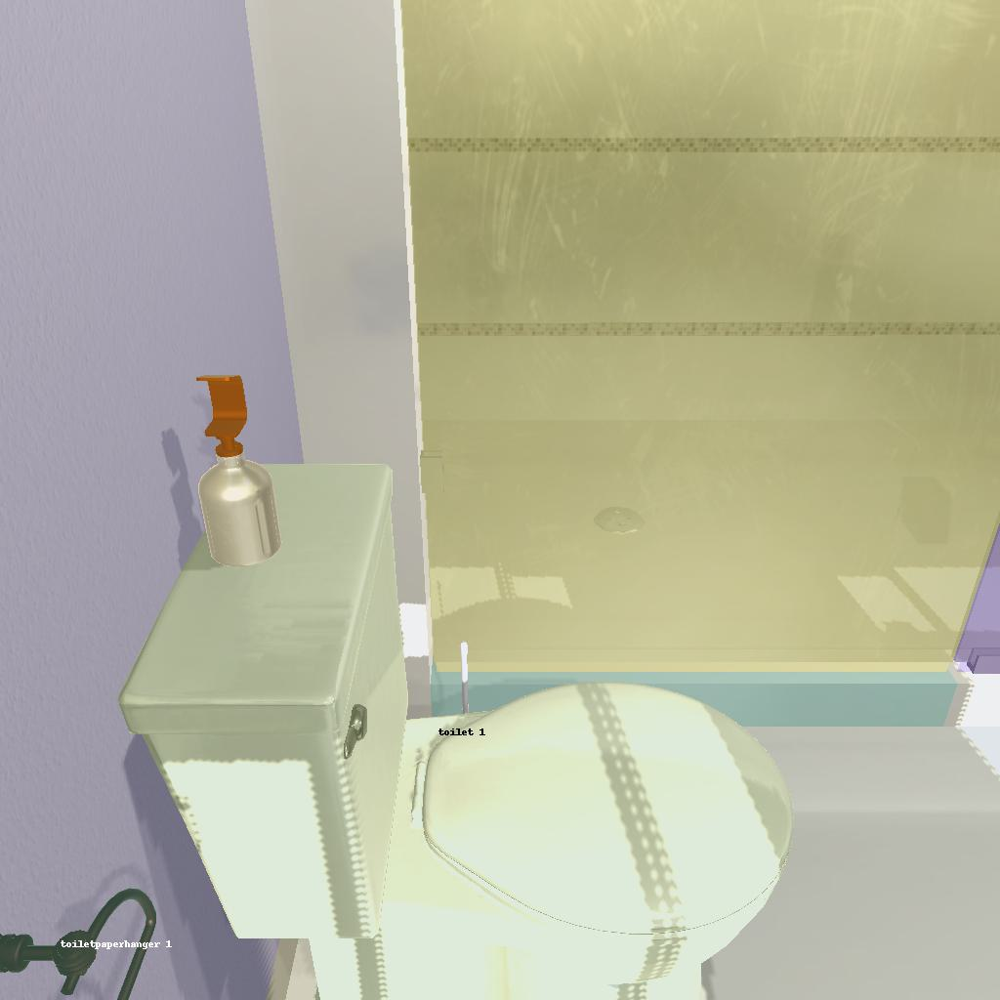

---------------------------------------------------------task: 28---------------------------------------------------------
--------------------------------------------------------------------------------------------------------------------------------------------------------------------
--------------------------------------------------------------------------------------------------------------------------------------------------------------------
Step:--------------------------------------------------------------------------1-------------------------------------------------------------------------------
----------------------------------------
VLM Prompt:
Image1:
Image2:
**Instruction**
1. Analyze the provided image to identify all visible household objects, focusing on those relevant to the task description "put two spraybottle in toilet."
2. Use the analysis of the image and the task hint "The agent must find an object of the desired type, pick it up, find the correct location to place it, put it down there, then look for another object of the desired type, pick it up, return to previous location, and put it down there with the other object." to answer the question: what is the most reasonable action in the choices for the task description "put two spraybottle in toilet"?
4. Decide and write the answer using the template: The answer is: (i): , where i is the real number. If there is no desired object in the image, search every place based on **Initial Observation** to find the object. And if no one is exactly correct, choose a similar answer.
**Initial Observation**
You are in the middle of a room. Looking quickly around you, you can see bathtub (1), bathtubbasin (1), cart (1), sink (1), garbagecan (1), sinkbasin (1), countertop (1), drawer (1-4), toilet (1), toiletpaperhanger (1)
**Answer Choices**
(1): go to bathtub 1
(2): go to bathtubbasin 1
(3): go to cart 1
(4): go to sink 1
(5): go to garbagecan 1
(6): go to sinkbasin 1
(7): go to countertop 1
(8): go to drawer 1
(9): go to drawer 2
(10): go to drawer 3
(11): go to drawer 4
(12): go to toilet 1
(13): go to toiletpaperhanger 1
**Answer**
Let's think step by step by following the instructions.
----------------------------------------
----------------------------------------
Original Response:
The task is to put two spray bottles in the toilet. In the provided images, there is one spray bottle visible on top of the toilet tank. Therefore, the first step is to pick up this spray bottle.
Since the spray bottle is already in close proximity to the toilet, the most reasonable next action would be to put this spray bottle in the toilet as it aligns with the task description. However, the task requires two spray bottles, and only one is visible in the image. Therefore, after placing the first spray bottle in the toilet, the agent would need to search for a second spray bottle.
According to the initial observation, there are several places where a second spray bottle could potentially be found, such as the cart, drawers, or countertop. However, since the first spray bottle was found on top of the toilet tank, it is reasonable to search areas that are similar or close by for the second spray bottle.
Out of the answer choices provided, going to areas like the countertop or drawers would be a reasonable next step to find another spray bottle. However, since the task is to put the spray bottles in the toilet, the most immediate action should be focused on the first spray bottle.
The answer is: (12): go to toilet 1
----------------------------------------
----------------------------------------
>>> Refine Original VLM Response and Get Pure Action: go to toilet 1
----------------------------------------
-----------------------------------------------------------------
Running time: 13.558105707168579 seconds
Total Money: 17.92311
-----------------------------------------------------------------
-----------------------------------------------------------------
Text Observation:You arrive at loc 11. On the toilet 1, you see a showerdoor 1, a soapbottle 1, and a scrubbrush 1.
-----------------------------------------------------------------
UNSUCCEED